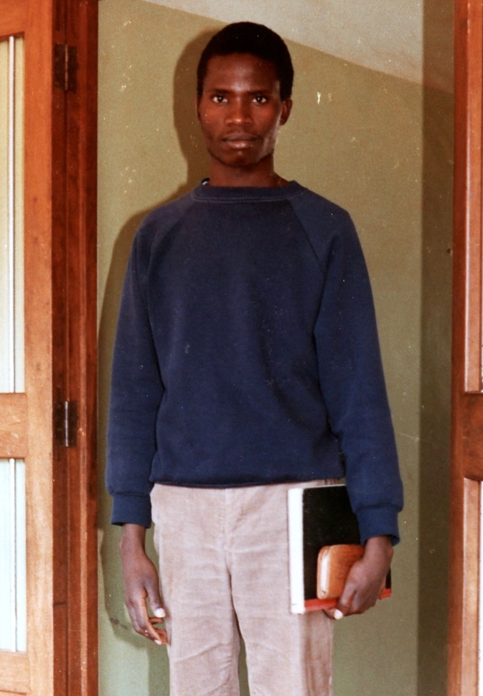
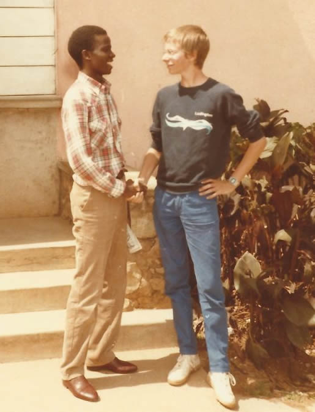
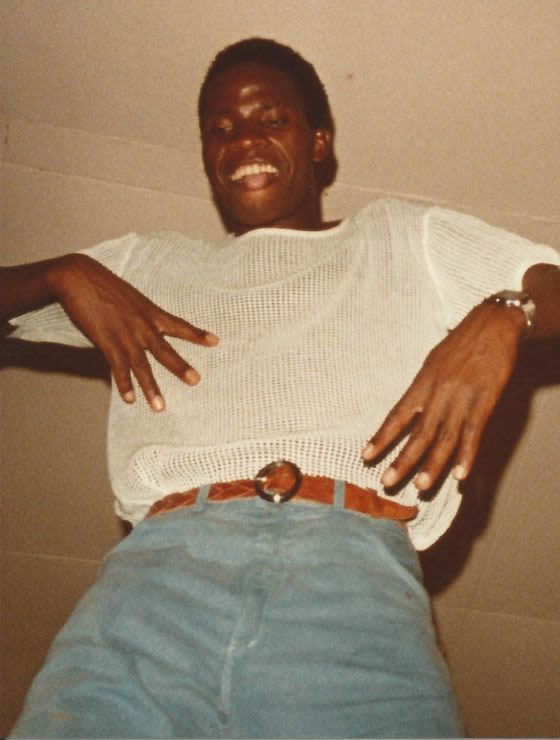
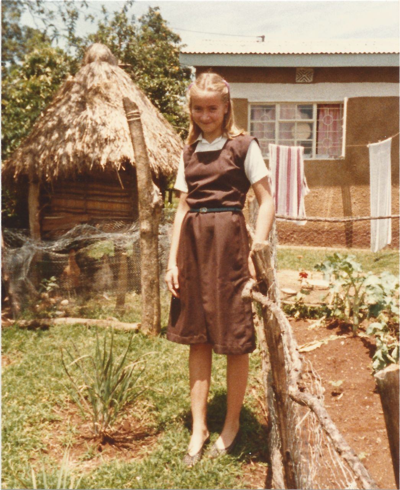

Birgit again worked out of the Danish Volunteer Service. This time in Kisii district, Kenya. Line came to attend a year in primary school, and Jesper attended half a year at Cardinal Otunga High School.
The late Dixon struggled at school in Kisumu. But dispite many fall backs, he managed ok. He finally got his ACNC.
Whenever Dixon was around the house in Mosocho, they all had fun. Dancing, joking, and also giving words of advice to the young Jesper and Line about the realities of life.
The wazungu left for Denmark, and Dixon was on his own in Nairobi, trying to get through the CPA course, but it did not go as expected.
Eventually he went back to Zambia. |



 |